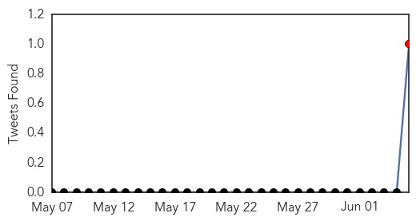
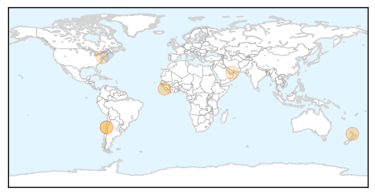

30 Day Trends
Web: 0 alerts, 0 warnings
Twitter: 1 alerts, 0 warnings
Top Articles:
- 0.908
- PAHO/WHO urges measles and rubella vaccination for travelers to the 2015 Americas Cup
- 0.906
- Secondary measles cases expected
- 0.903
- 1.3 Million Sierra Leone Children to be vaccinated against Measles, Polio
- 0.736
- Going to the Americas Cup? Get vaccinated!
- 0.700
- Almost every child in UAE immunised against measles: WHO report
- 0.656
- Anti Vaccine Movement Mostly Parents From Rich, White Areas
Top Tweets:
- 0.528
- 2/2 SARS probably spread more easily than MERS but it was no measles. Many people who caught SARS infected no one else.
Web/News Articles

Tweets
Article Locations
Article Confidences